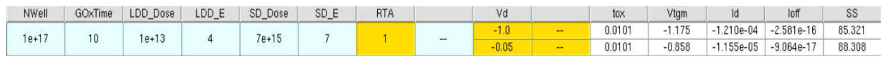

Selected condition
LDD: 1e13 cm⁻² · 4 keV
S/D: 7e15 cm⁻² · 7 keV
Anneal: 1000 °C · report parameter RTA=1
Vd: -1.0 V
01 · CONVERSION
NMOS example → PMOS process and bias
Body / source-drain dopant polarity와 gate/drain bias 방향을 PMOS 동작에 맞게 변경하고, BF₂ 기반 LDD와 deep Source/Drain implantation을 적용했습니다.
02 · OPTIMIZATION
공정변수를 한 단계씩 줄여가며 후보 선택
Step 1LDD Dose
Step 2LDD Energy
Step 3S/D Dose
Step 4–5S/D Energy · RTA
Sequential search 결과이므로 모든 변수 조합에 대한 global optimum으로 해석하지 않습니다.
03 · FINAL ELECTRICAL RESULT
Drive current, leakage, SS를 함께 평가
|Id|1.210e-4 A/µm
|Ioff|2.581e-16 A/µm
SS85.321 mV/dec
Vtgm-1.175 V
04 · REPRODUCIBILITY
공개 가능한 source와 한계를 분리
보고서에서 실제로 확인 가능한 SProcess command는 보존했고, 원본 SDevice/SVisual 전체 입력이 없는 부분은 임의로 재구성하지 않았습니다. RTA unit, metric extraction, very-small Ioff 해석 등은 limitations에 별도 기록했습니다.
05 · RESOURCES